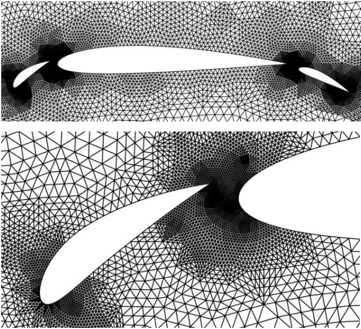
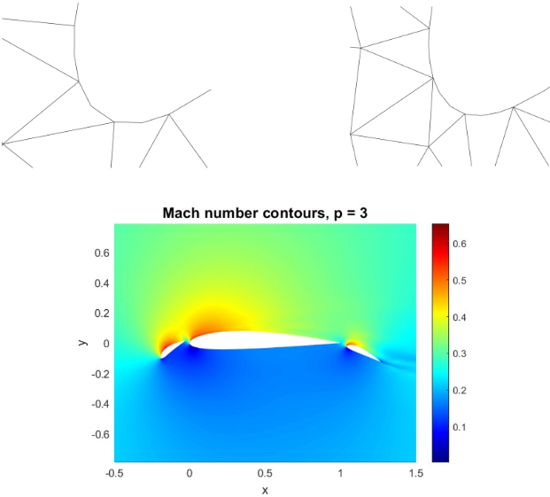
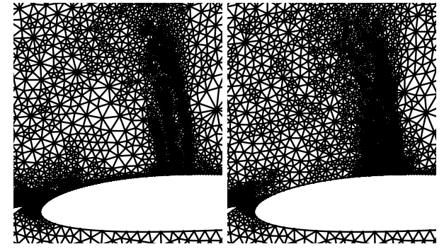

Mesh Adaptation (Adjoint Error Indicators)
Adjoint-based mesh adaptation strategy for mesh refinement of compressible flow over the multi-element airfoil using SSP-RK2 with local time stepping using Finite Volume Method developed from sctrach.

Mesh Generation
The objective of this project is to generate an unstructured triangular mesh for a three-element airfoil. The geometry of the airfoil can be seen in Figure. The origin of the coordinate system will be set at the leading edge of the main element, which has a unit chord, c = 1. The fairfield boundary is a square where (x,y) ∈ [-100,100]². The coarse mesh will consist of around 1500 cells, where there are smaller cells close to the airfoil and larger cells in the fairfield. Uniform refinement will be used to generate meshes with 8k, 32k, and 128k elements. Local refinement will be implemented to improve the resolution in important regions like the leading and trailing edges of the airfoil. Finally, verification will be conducted on all meshes to ensure validity and the meshes will be printed to a .gri file format.
Discontinuous Galerkin
In this project, the Discontinuous Galerkin Method was used along with the implementation of curved meshes, to resolve the flow around an airfoil and a Gaussian bump. The solver had the implementation for p = 0, 1, 2, 3, in order to fulfill the convergence study. It was observed that the rate of convergences is proportional to the order of spatial approximation (p). Further, the capability for mesh adaptation was introduced, and the results after several iterations were compared with data obtained from higher order p and finer mesh.
Adjoint Based Mesh Adaptation
First-order methods such as FVM are heavily dependent on the quality of the underlying computational mesh. Adjoint-based mesh adaptation is a powerful technique for improving the accuracy and efficiency of numerical simulations. By transferring solution states between coarse and fine spaces, problematic regions within the domain are identified. Deciding which cells are to be refined depends on the targeting strategy. The lift, drag, moment and entropy adjoints were used to adapt the mesh and the targeting strategy chosen was to refine 25% of the total error. The rate of convergence varies based on which adjoint is used to drive refinement as well as the specific targeting strategy. If finely tuned, using a statistical quantity such as the mean to target cells would be the most effective. The quality of the solution has improved compared to primitive adaptation methods and uniform refinement.
